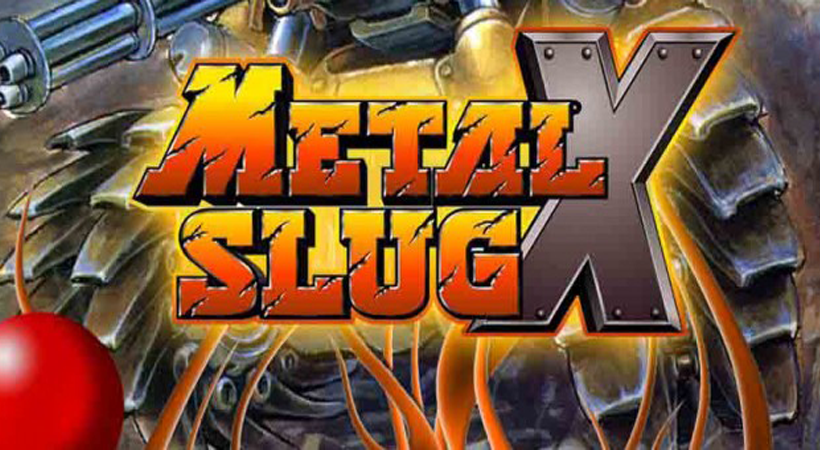
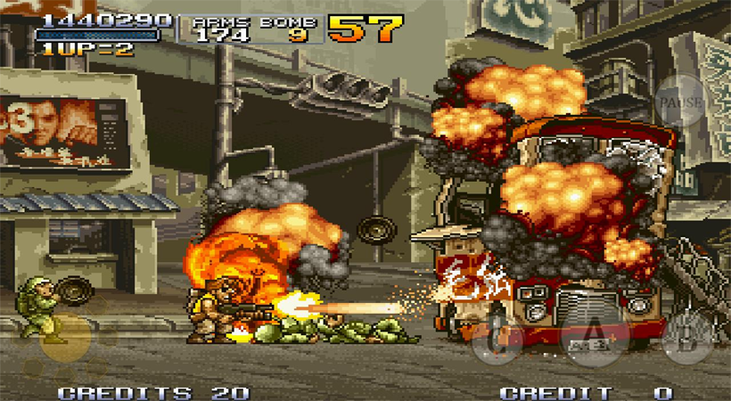
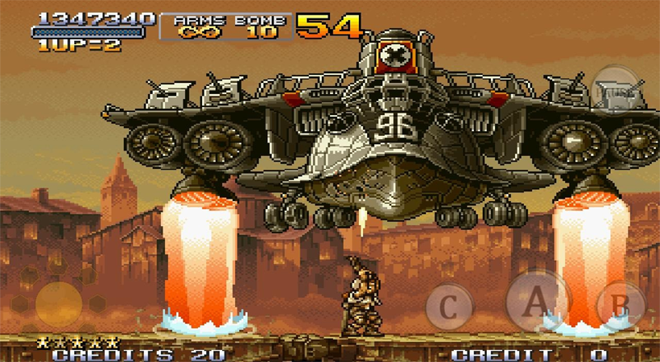

Thousand of Games


Metal Slug X PC Game Free Download
Metal Slug X PC Game Free Download setup in single direct link for Windows. It is a run and gun game based on an interesting game series.
Metal Slug X PC Game Overview
Metal Slug X PC Game is a very interesting game which is developed and published by SNK. In this game player has to play different levels and to accomplish each level he has to be very quick. There will be some enemies. Which may come across the player but he has to be conscious. At the start he may not be given the facilities and weapons and as he proceeds numerous weapons and tanks will be unlocked for later use. Health factor is also main point to proceed in the levels. Apart from weapons player will be given other opportunity like kick or jump etc to proceed efficiently. Bonus factor has also been added. Which may be given to the player, through which he gets success in various missions.

Features of Metal Slug X
i) Multiplayer game.
ii) Player can configure control, display, sound volume and skills.
iii) Fully customizable
iv) Amazing graphics
v) New weapons and vehicles introduced
vi) Player can collect food items to become fat
vii) A number of modes added

System Requirements of Metal Slug X
Before you start Metal Slug X make sure your PC meets minimum system requirements.
i) Operating System: Tested on windows 7 64 Bit
ii) CPU: Pentium 4 2.4 GHz, Dual Core 2 GHz
iii) RAM: 1 GB
iv) Hard Disk Space: 500 MB

Metal Slug X Free downlaod
Click on the below button to start Metal Slug X. It is full and complete game. Just download and start playing it. We have provided direct link full setup of the game.

© Copyright Thousandofgame.com 2018
Go to Top